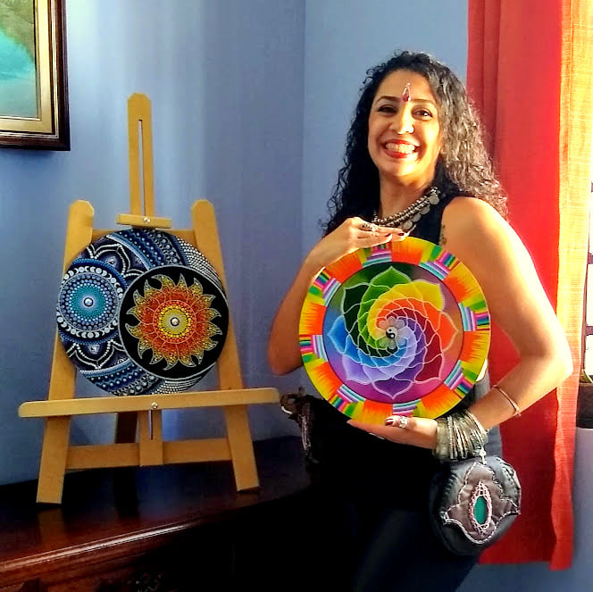

Ho'oponopono
Painted on wood with acrylic Ink, 60 centimeters, this mandala was made to bring the powerful energy of Kundalini!
Full Energy
Made on wood, with acrylic ink, 33 centimeters, this mandala is specific to cleaning the energy of the place.

Flower Light
Painted on wood with acrylic ink, 33 cm, the energy around this mandala is to bring tranquility to your family
Rainbow
Painted with ink on wood, this rainbow color mandala is was designed to bring balance for all the chakras.
Complete energy
Made on wood, painted with acrylic ink in a 33 centimeters base, this art brings all the shadows of the evening and have the positive energy of the sun and the moon.
Sweet Flowers
Painted on wood with acrylic ink, 20 centimeters, is a different version of the tradicional mandalas, made in a plate with special varnish.

Greek Eye
Painted on wood with acrylic ink, 20 centimeters, in acrylic-based and painted in acrylic ink, this combination represents the symbol of the greek protection.

Peacock
Made on wood, acrylic ink in a 35 centimeters wood, made with the dotting technique, it was designed to bring happiness.
About Me, Made of love Art

Colorful and Energetic Art!
With Love from my heart to the world
Cris Rocha, 33 years old, born in São Paulo Brazil, spent a large part of her life living in the interior of the state and now lives in Barcelona -Spain.
Since she was a little girl, she has always been passionate about drawings, took dance lessons and was always focused on the artistic world. However, she professionally did not follow the artistic path and worked in the technology area from 2010 to 2020. These paths brought her to the art she practices today.
Mandalas and manual arts emerged in her life in mid-2008, even before she took a spontaneous course in fashion and styling, and it can be said that she was unconscious. When she drew and painted geometries and florals on the sheets of her notebooks and repeated patterns in two other crafts, she did not yet know the meaning and essence of those shapes.
The great inspiration for getting out of the role was when she started to have more contact with the arts and traveled to Barcelona in 2018 - where she saw the cultural diversity of the region and decided to resume her old hobby.
In 2020, she posted on her social networks one of her first Mandalas on a makeshift wooden canvas, which began to spark people's interest in her paintings.
In 2020, during the Covid-19 World Pandemic, he decided to dive head first and respond to the Call his spirit that screamed in his heart, to enter the mysterious and mystical Universe of sacred geometries and release them to the world, thus Made of Love was born. art.
Since then, she learns and develops different techniques to apply in her art, especially after the change of country, there were also changes in the way she dealt with art inspired by the complementary differences of this culturally rich country. Today her painting techniques are with acrylic paint and spray on wooden canvas or canvas, she loves to bring the psychedelic side of the Mandalas, working with various fronts of techniques and developing her own way of delivering the art.
Now with the post-pandemic blossoming, she is getting ready to organize an exhibition of her art in physical spaces, exhibit at alternative music events, fairs, institutes and wherever else the art to take.
Welcome to my artistic universe!
Cris Rocha - Artist